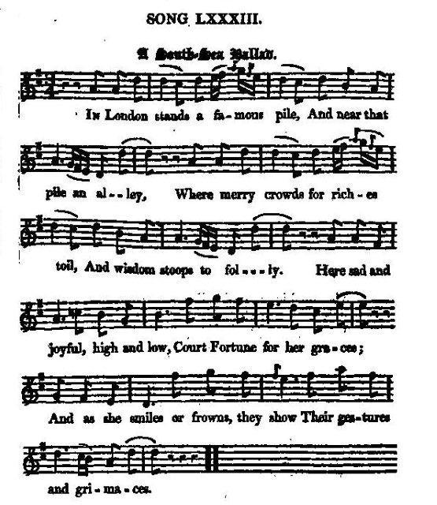
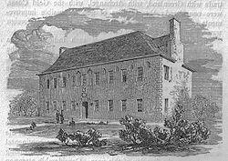
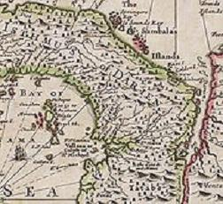

A "South-Sea" Ballad
Ballade du "Pacifique"
Author of the lyrics unknown
Tune - Mélodie N°1"Sally in our Alley" by Henry Carey
from Hogg's "Jacobite Reliques" , vol. I, N° 83, 1819
Sequenced by Christian Souchon
Tune - Mélodie N°2
"Of all the girls that are so smart"
Sequenced by Lesley Nelson-Burns
Tune - Mélodie N°3
"Of all the fiends in time of grief"
from The Beggar's Opera
Arrangement by Frederic Austin
Tune - Mélodie N°4
"A Cobbler there was and he liv'd in a stall"
from Watt's "Musical Miscellany" (1729).
Sequenced by Christian Souchon
|
To the tune:
According to Chappell (1859), this famous song appears in Henry Carey 's "Musical Century", Walsh's "Dancing Master" (1719), Gay's "Beggar's Opera" (1728, by the name of "Of all the girls that are so smart"), and, as The "Devil to Pay", The "Fashionable Lady", The "Merry Cobbler" , "Love is a Riddle", The "Rival Milliners", on numerous broadsides. He credits Carey with the original tune, which, about 1760, was superseded by another, somewhat similar but easier to sing, one. First verse of "Sally in our Alley" by Henry Carey. (1693?–1743) Of all the girls that are so smart There 's none like pretty Sally; She is the darling of my heart, And she lives in our alley. There is no lady in the land Is half so sweet as Sally; She is the darling of my heart, And she lives in our alley. Source "The Fiddler's Companion" (cf. Links). |
 |
A propos de la mélodie:
Selon Chappell (1859), ce chant fameux figure d'abord dans le "Musical Century" de Henri Carey , puis dans le "Maître à danser" de Walsh (1719), dans l' "Opéra des Gueux" de Gay, sous le titre "De toutes les filles à la page"), et sous des titres divers, "la rançon du diable", "la dame élégante", "le joyeux savetier" , "l'amour est une énigme", "les modistes rivales", sur différentes feuilles volantes. Cet auteur voit en Carey l'auteur de la mélodie originale, qui fut évincée vers 1760 par une autre assez semblable, mais plus facile à chanter. La première strophe de "Sally in our Alley" d'Henry Carey (1693 ? -1743) s'énonce ainsi: De toutes les filles de bien Nulle ne vaut notre Sally. Elle, à qui mon cœur appartient. Elle habite en notre ruelle. Aucune grande dame ici N'eut jamais tant de charme qu'elle. C'est d'elle que je suis épris. Elle habite en notre ruelle. Source "The Fiddler's Companion" (cf. liens). |

|
A "SOUTH-SEA" BALLAD
1. In London stands a famous pile, And near that pile an alley Where merry crowds for riches toil, And wisdom stoops to folly. Here sad and joyful, high and low, Court Fortune for her graces; And as she smiles or frowns, they show Their gestures and grimaces. 2. Here stars and garters do appear, Among our lords the rabble, To buy and sell, to see and hear; The Jews and Gentiles squabble. Here crafty courtiers are too wise For those who trust to fortune: They see the cheat with clearest eyes, Who peep behind the curtain. 3. The lucky rogues, like spaniel dogs, Leapt into "South-Sea" water, And there they fish for golden frogs, Not caring what comes after. 'Tis said that alchemists of old Could turn a brazen kettle, Or leaden cistern, into gold, That noble tempting metal, 4.But if it here may be allowed To bring in great and small things, Our cunning "South-Sea", like a God, Turns nothing into all things. What need have we of Indian wealth, Or commerce with our neighbours ? Our constitution is in health, And riches crown our labours. 5. Our "South-Sea" ships have golden shrouds, They bring us wealth, it's granted; They lodge their treasure in the clouds, To hide it till it's wanted. O Britain, bless thy present state, Thou only happy nation; So oddly rich, so madly great, Since bubbles came in fashion! 6. Successful rakes exert their pride, And count their airy millions, Whilst homely drabs in coaches ride, Brought up to town on pillions. For me, I follow reason's rules, Nor fat on South-Sea diet; Young rattles and unthinking fools Are those that flourish by it. 7. Old musty jades and pushing blades, Who've least consideration, Grow rich apace, whilst wiser heads Are struck with admiration. A race of men, who, t'other day, Long crush'd beneath disasters, Are now by stock brought into play, And made our lords and masters. 8. But should our "South-Sea" bubble fall, What numbers would be frowning! The losers then must ease their gall By hanging or by drowning. But though our foreign trade is lost, Of mighty wealth we vapour, When all the riches that we boast Consists in scraps of paper. Source: "The Jacobite Relics of Scotland, being the Songs, Airs and Legends of the Adherents to the House of Stuart" collected by James Hogg, published in Edinburgh by William Blackwood in 1819. |
BALLADE DU PACIFIQUE
1.Il est à Londres un édifice Que longe une ruelle, Où chacun veut devenir riche, Où la raison chancelle. Tous, qu'ils soient humbles ou puissants Courtisent la Fortune, Et grimacent en attendant Qu'elle soit opportune. 2. Les chevaliers d'ordres divers Y côtoient la racaille. On achète, on vend, on s'enquiert. Juifs et Goïs se chamaillent. Les intrigants sont trop savants Pour qui croit en la chance: Un escroc lorgne, ils le voient bien, Aux rideaux en silence. 3. Et l'on se rue, en bandes drues, Dans l'eau du "Pacifique" Pour pêcher les poissons dorés Sans souci de la suite. Les alchimistes ont, dit-on Fait d'un chaudron en cuivre Ou d'une citerne de plomb, Cet or, dont on s'enivre. 4. Mais que l'on m'accorde le droit D'être plus prosaïque Rien ne fut transformé, je crois Par ceux du "Pacifique". Est-il besoin que les Indiens Amorcent le commerce? Nous sommes tous vaillants et sains: La sueur c'est la richesse! 5. Nos bâtiments, gréés d'argent, Transportent nos richesses Qu'ils vont cacher dans les nuées: Pour l'heure rien ne presse! Britannia, il n'est que toi Pour te sentir heureuse D'un avenir qui doit surgir De bulles savonneuses! 6. Des spéculateurs font état De gains imaginaires Et des pimbêches en calèches N'ont plus mal au derrière. Le bon sens est mon conseiller Foin de ce "Pacifique": Aux fous et aux écervelés Seuls il est bénéfique. 7. De vieilles catins, des bretteurs, Sans confusion aucune, S'enrichissent. Les gens d'honneur Admirent leur fortune. Ces êtres jadis accablés Par les pires désastres, Ce sont nos maîtres désormais Grâce aux cours et aux astres. 8. Mais si la bulle crève enfin, Qui fera grise mine? Les perdants se noieront afin Que leur bile s'élimine. Fini le commerce étranger! Non les fanfaronnades: Nous aurons des bouts de papiers, Par millions, par myriades. (Trad. Christian Souchon(c)2010) |
|
"A song on the same project with the foregoing [Marilla], and composed to the excellent old English tune of "Sally in our Alley", which has long been naturalized here, not from having had any shares in the Bank of Scotland, but solely on account of its unadorned simplicity of character, the first excellence in music of which the Scottish ear is susceptible. At a concert lately, I asked a countryman of my own if he was not delighted with the execution of the performers. " I canna say't, man," said he; " my lugs winna tak in that confusion o" sounds. I wadna hae gi'en ae verse o' The Flowers o ' the Forest for a' I hae heard." I am sorry that it is not a very good set of this fine old air that I have given. Mr Thomson's work contains a much better and more perfect one." (Maybe the tune sequenced by Lesley Nelson-Burns, see above).
Hogg in "Jacobite Relics" |
"Voici un chant sur le même sujet que le précédent [Marilla] et composé sur l'excellente mélodie anglaise de "Sally in our Alley", qui a été adoptée par les Ecossais depuis longtemps, non en tant qu'actif de la Banque d'Ecosse, mais uniquement en raison de charmante simplicité à laquelle l'oreille des calédoniens est si sensible. A un concert récemment, je demandai à l'un de mes compatriotes s'il ne trouvait pas l'orchestre excellent. "Je ne saurais trop dire", répondit-il, "mes oreilles ne s'y retrouvent pas dans cette confusion de sons. Je n'échangerais pas un couplet des "Flowers of the Forest" contre tout ce qu'on vient d'entendre." Je regrette de ne pas fournir une très bonne version de ce joli air ancien. L'ouvrage de M. Thomson en présente un bien meilleur et plus parfait. (peut-être, celui séquencé par Lesley Nelson-Burns, cf. plus haut).
Hogg in "Jacobite Relics" |
|
|
|
|
THE SOUTH-SEA or DARIEN SCHEME
The Company of Scotland The 1690's were a period of economic difficulties for Scotland, due to its weak political position in front of the great powers of Europe, including neighbouring England, and their overseas empires, waging trade wars from which Scotland was incapable of protecting itself. Besides, several years of widescale crop-failure brought famine. In response to this alarming situation, a number of remedies were enacted by the Parliament of Scotland: among them the creation of the Company of Scotland that was chartered with capital to be raised by public subscription to trade with "Africa and the Indies". The Darien Scheme This Company soon started an ambitious plan devised by William Paterson to establish a colony on the Isthmus of Darien (Panama), between the Caribbean Sea and the South Sea, in the hope of establishing trade with the Far East. They easily raised subscriptions in London for the scheme (cf. verse 1 of the song), but the English Government, at war with France, did not want to offend Spain, which claimed the territory. As a result, the English investors were forced to withdraw.  Returning to Edinburgh, the Company raised 400,000 pounds sterling in a few weeks (roughly £40 million in 2007), with investments from every level of society , (roughly 1/5 of the wealth of Scotland).The two expeditions The first expedition of five ships set sail from Leith on 14 July 1698, with around 1,200 people on board. Their orders were to proceed to the Bay of Darien, and there make a settlement on the mainland. On 2 November 1698 the settlers christened their new home "New Caledonia". There they build a small canal and constructed Fort St Andrew, equipped with fifty cannon. Close to the fort they began to erect the huts of the main settlement, New Edinburgh, and to clear land for growing yams and maize. Agriculture proved difficult and the following year, the stifling atmosphere caused a large number of deaths in the colony. The mortality rose eventually to ten settlers a day. Meanwhile, King William had instructed the English colonies in America not to supply the Scots' settlement so as not to incur the wrath of the Spanish Empire, which soon caused fever to spread and many settlers died. In July 1699, after barely eight months, the colony was abandoned. Only 300 of the 1,200 settlers survived and only one ship managed to return to Scotland. A desperate ship from the colony that called at the Jamaican city of Port Royal was refused assistance on the orders of the English government. A second voyage of more than 1,000 people left Scotland and arrived on November 30, 1699 to discover the settlement of 'New Edinburgh' deserted and overgrown, but quickly set about rebuilding it. However, their fear of being driven out by the Spaniards led them to attack the Spanish fort at Toubacanti in January 1700. They Scots were then subjected to Spanish attacks for a month until they surrendered, and were allowed to leave. Just a few hundred survived. The Acts of Union The failure of the Darien scheme was one of the motivations for the 1707 Acts of Union, inasmuch as part of the Scottish establishment realised that Scotland could never be a major power, unless it shared the benefits of England's international trade and the growth of the English Empire. More so, the Scottish economy had been bankrupted by the "Darien Fiasco" and Westminster had been petitioned by Scotland to wipe out the Scottish national debt and stabilise the currency. Personal Scottish financial interests were also involved . Many Scottish Commissioners had invested heavily in the Darien Scheme and they believed that they would receive compensation for their losses. The 1707 Acts of Union granted £400,000 to Scotland to offset future liability towards the English national debt. More than half of it was used to recoup the shareholders of the Company of Scotland. This is the origin of the assertion that the Union was effected by the bribery of the Parliament. Main source: Wikipedia |
LE PROJET DARIEN
La Compagnie d'Ecosse Les années 1690 furent marquées par de graves difficultés économiques pour l'Ecosse, confrontée à la concurrence des grandes puissances européennes et leurs empires coloniaux, y compris celle de l'Angleterre, à laquelle elle ne pouvait faire face. De plus plusieurs années successives de mauvaises récoltes provoquèrent des famines. En réponse à cette situation préoccupante, une série de remèdes fut mise en œuvre par le Parlement écossais, parmi lesquels le création de la Compagnie d'Ecosse autorisée à émettre des actions parmi le public avec pour objet le "commerce avec l'Afrique et les "Indes". Le Projet Darien. La Compagnie se lança bientôt dans un projet imaginé par William Paterson . Il s'agissait de créer une colonie sur l'Isthme de Darien (Panama) entre la mer des Caraïbes et l'Océan Pacifique, dans l'espoir d'y contrôler le commerce vers l'Extrême-Orient.  La Compagnie obtint facilement des souscriptions sur le marché de Londres (cf. 1ère strophe du chant), mais le gouvernement anglais, en guerre avec la France et qui ne voulait pas se mettre mal avec l'Espagne qui revendiquait ce territoire, obligea les investisseurs anglais à se retirer du projet.Réinstallée à Edimbourg, la Compagnie parvint à faire souscrire, en quelques semaines, pour 400.000 livres d'actions (l'équivalent de 45 millions d'euros 2007, représentant 1/5ème de la richesse nationale) dans toutes les couches de la société . Les deux expéditions La première flotte de 5 navires partit de Leith le 14 juillet 1698, avec 1200 personnes à bord. Leur mission était de se rendre dans la baie de Darien et de fonder un établissement sur le continent. Le 2 novembre cet établissement fut baptisé "Nouvelle Calédonie". On construisit un petit canal et la Forteresse Saint André où l'on installa 50 canons. Au pied du fort on construisit les cabanes du village principal, La Nouvelle Edimbourg et l'on commença à défricher le terrain pour y cultiver les ignames et le maïs. Ces plantations furent un échec et au cours année suivante, le climat délétère causa la mort d'un grand nombre de colons. On atteint finalement un taux de 10 morts par jours. Pendant ce temps, le roi Guillaume avait donné comme instructions aux colonies anglaises en Amérique de n'accorder aucun soutien aux colons écossais , pour éviter les représailles des colonies espagnoles. Ceci ne fit qu'accentuer l'épidémie de fièvre et augmenter le nombre des morts. En juillet 1699, à peine 8 mois après sa fondation, la colonie était abandonnée. Seuls 300 sur les 1.200 pionniers parvinrent à rentrer en Ecosse. Un bateau en détresse qui avait fait escale à Port Royal en Jamaïque se vit refuser toute assistance sur les ordres du gouvernement anglais. Une seconde expédition de 1000 personnes quitta l'Ecosse et arriva le 30 novembre 1699 pour découvrir la "Nouvelle Edimbourg" abandonnée et recouverte par la végétation. Elle se mit en devoir de la reconstruire. Mais de peur d'être chassés par les Espagnols, les colons attaquèrent leur fort de Toubacanti en janvier 1700. Ils furent dès lors la cible d'attaques incessantes jusqu'à ce qu'ils se rendent au bout d'un mois et qu'on les laisse repartir chez eux. Seuls quelques centaines survécurent à ces épreuves. Les Actes d'Union L'échec du projet Darien fut l'un des motifs des Actes d'Union de 1707, dans la mesure où une partie des dirigeants écossais se rendaient compte que leur pays ne pourrait devenir une puissance qui compte qu'en partageant avec l'Angleterre les bénéfices de son commerce international et de son empire colonial en pleine expansion. D'autant que l'Ecosse avait été ruinée par le Fiasco de Darien et que des requêtes avaient été présentées aux autorités de Westminster pour qu'elles effacent la dette nationale de l'Ecosse et stabilisent sa monnaie. Des intérêts privés écossais étaient aussi en jeu. De nombreux membres écossais des commissions chargées de préparer l'union avaient beaucoup investi dans le projet Darien et étaient persuadées qu'elles obtiendraient réparation de leurs pertes. Les Actes d'Union de 1707 prévoyaient le versement à l'Ecosse d'une subvention de 400.000 livres pour couvrir sa dette future envers l'Angleterre. La moitié de cette somme fut utilisée pour dédommager les actionnaires de la Compagnie d'Ecosse. C'est là l'origine de l'accusation de corruption du Parlement qui entache la réalisation de l'Union en 1707. Main source: Wikipedia |
|
|
|